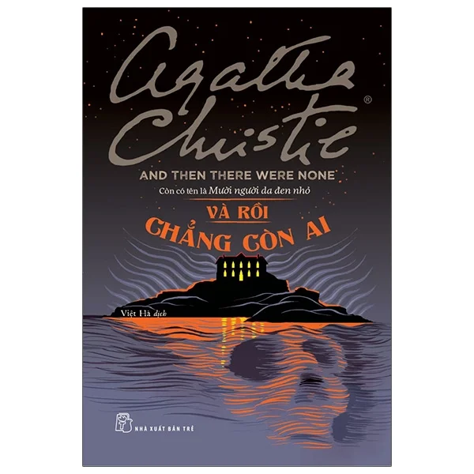

Kinh dị tâm lý - Bí ẩn
And Then There Were None (Và Rồi Chẳng Còn Ai)
Mười con người mang trong mình những bí mật tội lỗi trong quá khứ bất ngờ nhận được lời mời đến một hòn đảo biệt lập. Từng người một lần lượt bỏ mạng theo những câu thơ rùng rợn của bài đồng dao thiếu nhi treo trên tường. Ai là hung thủ khi không một bóng người thứ mười một tồn tại trên đảo?